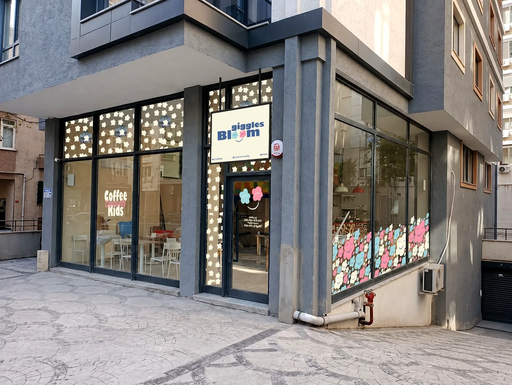
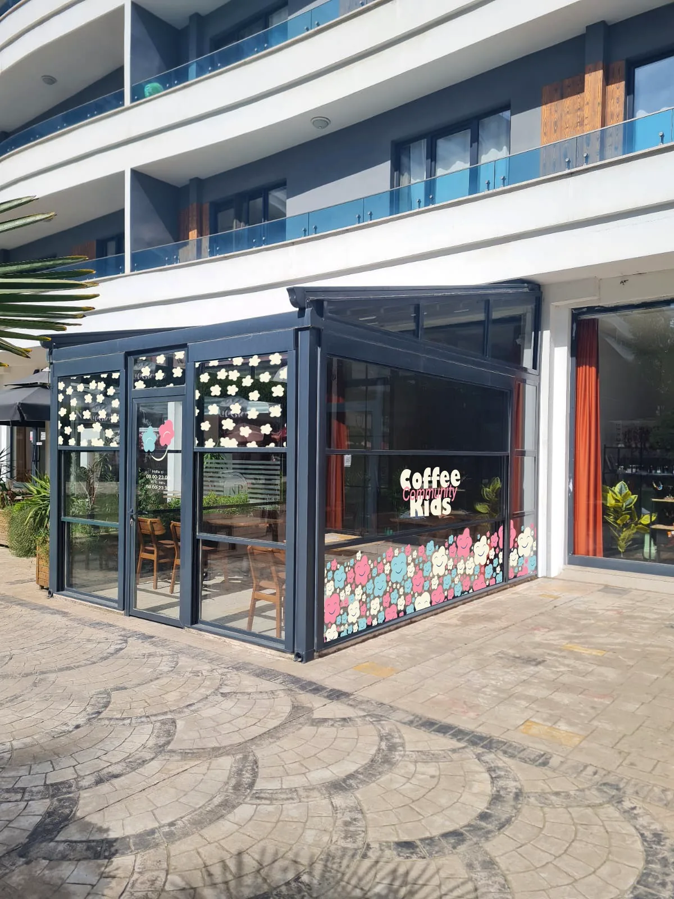
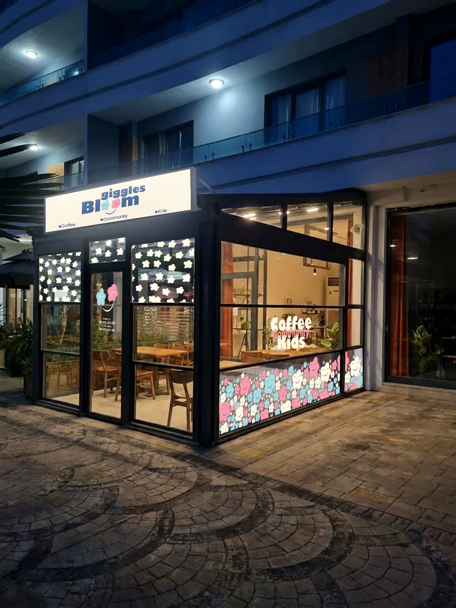

Ebeveynler nefes alır.
Çocuklar büyür.
Birlikte, aynı yerde.
Parents breathe.
Children grow.
Together, in one place.
Giggles & Bloom bir oyun kafesinden fazlasıdır. Modern aileler için oyun, uzman atölyeleri, sağlıklı kafe, kitaplık, çalışma istasyonları ve üniversite psikoloji bölümü iş birliğiyle gelişen Social Lab'ı aynı çatı altında buluşturan sıcak bir aile üçüncü alanı. Giggles & Bloom is more than a play café. It is a warm family third space for modern families, bringing play, expert-led workshops, a healthy café, library, coworking stations, and a university psychology department partnership through Social Lab under one roof.
Maya ve kardeşi kütüphane köşesinde birlikte kitap okuyor. Maya and her little brother are reading together in the library nook.
70m² — Çocuk kitapçısı, aile kafesi, Mini Oyun Köşesi ve küçük çalışma noktaları. Açılış döneminde kapasiteye bağlı, veli gözetiminde mini oyun. 70m² — Children's bookshop, family café, Mini Play Corner, and small work points. During opening, mini play is parent-supervised and subject to capacity.
Rezervasyon, ruh hali takibi, kitap ödünç, etkinlik kaydı ve daha fazlası — üye portalımızda. Bookings, mood tracking, book loans, event registration and more — in your member portal.
Portala Git →Go to Portal →Gerçek mekân, gerçek toplulukReal spaces, real community
Kadıköy ve Kurtköy merkezleri ailelerin günlük hayatına karışacak şekilde tasarlandı: kapıdan gir, çocuğun güvende olsun, sen de nefes al, çalış, oku ya da topluluğa katıl.Kadıköy and Kurtköy are designed to fit naturally into family life: walk in, know your child is safe, and use the space to breathe, work, read or join the community.



Bizi fark yaratan 6 şeySix things that set us apart
İstanbul'da pek çok oyun kafesi var. Biz oyun kafesi değiliz.There are many play cafés in Istanbul. We are not a play café.
Uzman seri atölyelerExpert series workshops
Psikologlar, STEM eğitimcileri, dil uzmanları ve sanatçılar tarafından sunulan 50+ seans türü. Her seri, ilerleyen öğrenme çıktılarıyla tasarlanmıştır — aktivite değil, gelişim.50+ session types delivered by psychologists, STEM educators, language specialists and artists. Designed with progressive learning outcomes — not activity, development.
LEGO® Serious Play® — imza metodolojiLEGO® Serious Play® — signature method
İstanbul'un tek sertifikalı LSP eğitmeni bünyemizde. Çocuktan kurumsal ekibe, tüm izlerimize entegre.Istanbul's only certified LSP trainer in our team. Woven across all tracks from children to corporate teams.
Ebeveyn ve çocuk için — aynı andaFor parent and child — at the same time
Çalışma istasyonları, kadın iyilik çemberleri, babalar akşamları — çocuğunuz oynarken siz de gelişiyorsunuz.Working stations, women's wellbeing circles, fathers' evenings — while your child plays, you grow too.
Gerçek topluluk — sosyal medya değilReal community — not social media
Babalar akşamı, büyükanne çemberi, çok kültürlü etkinlikler, yeni anneler grubu. Gösteriş için değil, bağlantı için.Fathers' evenings, grandparent circles, multicultural events, new mothers' support groups. For connection, not performance.
Kapsayıcı tasarım — ilk günden beriInclusive design — from day one
Otizm ve DEHB dostu sesyon protokolleri, sessiz kafe saatleri, duyusal dostu STEM seansları. Türkiye'de bir ilk.Autism and ADHD-friendly session protocols, quiet café hours, sensory-friendly STEM sessions. A first in Turkey.
Social Lab — Üsküdar ÜniversitesiSocial Lab — Üsküdar University
Üsküdar Üniversitesi Psikoloji Bölümü ortaklığıyla yürütülen araştırma ve topluluk laboratuvarı. Kanıta dayalı aile programlaması.Research and community lab run in partnership with Üsküdar University Psychology Dept. Evidence-based family programming.
📅 Yaklaşan Atölye & Etkinlikler 📅 Upcoming Workshops & Events
Tümünü gör → See all →Tek çatı altında her şeyEverything under one roof
🎓 Uzman Seri AtölyelerExpert Series Workshops
STEM, sanat, dil, sosyal-duygusal, hareket, liderlik. 4 iz, 50+ tür, dönemlik takvim. Çocuklar, ebeveynler, gençler ve büyükanneler için.STEM, art, language, social-emotional, movement, leadership. 4 tracks, 50+ types, seasonal calendar. For children, parents, teens and grandparents.
🎮 Açık Oyun ve Mini OyunOpen Play and Mini Play
Kadıköy'de ₺600 veli gözetiminde Açık Oyun Girişi; Kurtköy'de kafe veya kitap alışverişiyle kapasiteye bağlı Mini Oyun Köşesi. Çocuk bırakma veya bakım hizmeti değildir.Kadıköy offers a ₺600 parent-supervised Open Play Pass; Kurtköy offers a capacity-led Mini Play Corner with café or book purchase during opening. This is not drop-off childcare.
💻 Çalışma İstasyonlarıCoworking Stations
8 kişilik ayrılmış sessiz bölüm. Yüksek hızlı Wi-Fi, şarj noktaları, kafe servisi. Çocuğunuz oynarken siz çalışırsınız.8 dedicated quiet-zone stations. High-speed Wi-Fi, charging, café service. Your child plays while you work.
☕ Sağlıklı KafeHealthy Café
Şekersiz, glutensiz ailelere özel menü seçenekleri. Premium içecekler. Atölye seanslarına entegre servis.Sugar-free, gluten-free family menu options. Premium drinks. Integrated with workshop sessions.
📚 Kütüphane & KitapçıLibrary & Bookstore
Satın alma & ödünç. 5 okuma bölmesi. Aylık yazar buluşmaları. Türk ve uluslararası çocuk kitapları. Üyelere kitap ödünç hakkı.Buy & borrow. 5 reading pods. Monthly author meetups. Turkish & international children's books. Loan rights for members.
🔬 Social Lab
Topluluk, kanıt ve aile yaşamının buluştuğu yer. Üsküdar Üniversitesi Psikoloji Bölümü ortaklığı. Ebeveynler, çocuklar ve araştırmacılar birlikte keşfeder.Where community, evidence and family life meet. Üsküdar University Psychology Dept. partnership. Parents, children and researchers explore together.
💚 Ebeveyn Desteği & PsikolojiParent Support & Psychology
Uzman yazıları, destek grupları, anonim psikolojik destek hattı ve uzman ekibimize doğrudan sorgu. Üyelik gerekmez.Expert articles, support groups, anonymous psychological support pathway, direct expert queries. No membership required.
🎭 Özel EtkinliklerPrivate Events
Doğum günü, okul grubu, yazar günü, aile buluşması, partner etkinliği ve özel kullanım taleplerini önce ekip değerlendirir; uygunluk, menü ve teklif sonradan netleşir.Birthday, school group, author day, family gathering, partner event, and private hire requests are reviewed first; availability, menu, and proposal are confirmed afterwards.
🌿 Komşu Çemberi — KurtköyNeighbour Circle — Kurtköy
Kurtköy topluluğuna özel mahalle programı. Yerel aileler, uzmanlar ve hizmet sağlayıcıların buluşma noktası. G&B'nin Layer 3 ortak ekosisteminin ilk kanıtı.Community programme exclusive to Kurtköy. Meeting point for local families, experts and service providers. G&B's first Layer 3 partner ecosystem proof.
Ailenize özel bir paket varThere's a plan for your family
Beş üyelik paketi, beş farklı aile ritmi için. Canlı paket bilgileri webapp üzerinden güncellenir; haklar aylık sıfırlanır, devretmez ve kullanım kapasite/uygunluk koşullarına bağlıdır.Five membership tiers for five different family rhythms. Live package details are updated through the webapp; benefits reset monthly, do not roll over, and depend on capacity and availability.
- Üye erişimi ve dönemsel avantajlarMember access and seasonal advantages
- Esnek rezervasyon ritmiFlexible booking rhythm
- Kafe ve etkinliklerde üye fiyatıMember pricing for café and events
- Haklar aylık sıfırlanırBenefits reset monthly
- Hafta sonu aile ritmiWeekend family rhythm
- Uygunluk oldukça öncelikli rezervasyonPriority booking where available
- Kitap ve etkinlik avantajlarıBook and event advantages
- Kapasite ve şube kuralları geçerliCapacity and branch rules apply
- Atölye odaklı aylık kullanımWorkshop-focused monthly use
- Uzman ve gelişim programlarına erişimAccess to expert and growth programmes
- Kitaplık ve etkinlik avantajlarıLibrary and event advantages
- Öncelikli rezervasyon, uygunluğa bağlıPriority booking, subject to availability
- Haklar devretmezBenefits do not roll over
- Çalışma alanı + oyun birlikteWorkspace and play together
- Çocuk oyun alanı uygunluğa bağlıChild play area subject to availability
- Kitaplık ve kafe avantajlarıLibrary and café advantages
- Şube kapasitesi geçerlidirBranch capacity applies
- En geniş üyelik kapsamıBroadest membership scope
- Kitaplık, etkinlik ve atölye avantajlarıLibrary, event, and workshop advantages
- Öncelikli davetler, uygunluğa bağlıPriority invitations, subject to availability
- Adil kullanım ve kapasite kurallarıFair-use and capacity rules apply
- Haklar aylık sıfırlanırBenefits reset monthly
Ailelere verdiğimiz sözWhat families can expect
Family OS — Üye Portali CanlıFamily OS — Member Portal Live
Fiziksel mekânımızı dijital bir aile destek platformuna dönüştürdük. Rezervasyon, ruh hali takibi, kitap ödünç, etkinlik kaydı, Bloom Points ve çocuk kilometre taşı günlüğü — tümü üye portalınızda. Fiziksel mekânımız güvenin çapasıdır; platform güveni ölçeklendirir. Veri gizliliği temel prensiplerimizdendir: veriniz size aittir. We have extended our physical space into a digital family support platform. Bookings, mood tracking, book loans, event registration, Bloom Points and child milestone journaling — all in your member portal. Our physical space is the trust anchor; the platform scales trust. Data privacy is foundational: your data belongs to you.